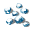
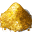
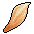
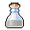
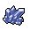
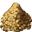
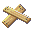

| Icon | Name | Description |
|---|
|  | cotton | cotton is used to create light armor. |
|  | gold | Gold is used to create gold coins |
|  | leather | Leather is obtained when butchering cattle and is used for creating light armor |
|  | oil | oil is used to make things flammable. |
 | ore | Iron is used to create tools, weapons and armor |
 | paper | Paper is used for spellbooks and newspapers. |
|  | soulgem | Soulgems are mined and are used by necromancy spells |
|  | steel | Steel is obtained by using iron ore, and is used to create weapons and armor |
| stone | Stone is mined and is used for building construction |
|  | wood | Wood is cut from trees and is used for building construction |